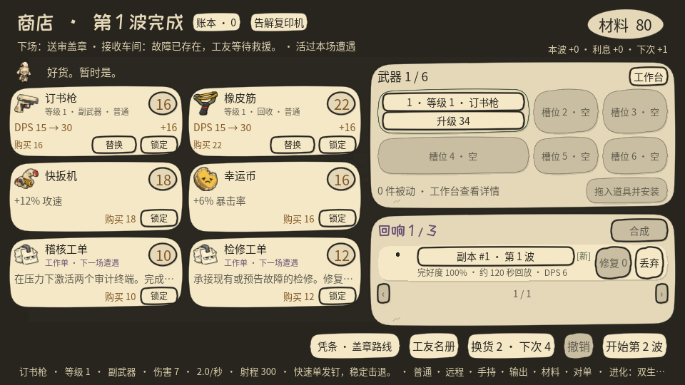
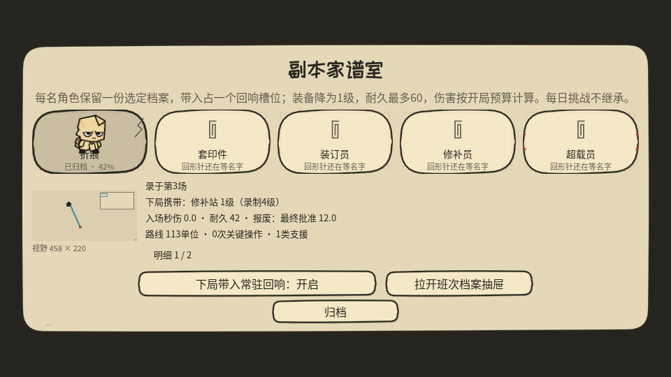

留下路线
每场战斗，把你的路线与装备录成一张回响。
原件缺席 · 副本请就位
昨天的你，是今天的耗材。
一款黑色幽默的纸偶自动射击游戏。
录下路线，与过去的自己并肩作战。
领用须知请珍惜每一份自己。
现场记录 / FIELD RECORD
武器自动开火。你来决定走向哪里、留下什么，以及何时报废过去。
每场战斗，把你的路线与装备录成一张回响。
副本沿旧路线再战。你可以围绕它走位、接力，或操作机器。
磨损会留下痕迹。修补、合订，或报废它，换取最后一次技能。
请按流程办理 / PAPERWORK INCLUDED
FORM 02-A
35 把武器，六个装备槽。合成同类、选择进化，部署纸猎犬、炮台或修补站。预算有限，账要自己算。

本局经费，不含后悔。FORM 06-B
把值得留下的回响存进档案。好路线、辅助装备和合适的技能，都有被记住的理由。

空相框，也算一份记录。送审、维修、救援、招安。印章会落下，设备会卡纸，签过的字会留下结果。
最终手续 / FINAL PROCEDURE
三幕，十二场，三位主管。救下的人、修好的设备、留下的副本，都在这张纸上。走出去、一起离开，还是留下接管？
欠款不会替你选结局。
领用说明 / BEFORE YOUR SHIFT
下载对应系统的 ZIP，解压后运行。下载入口会随已发布版本更新。
安装包带本地完整性签名，尚未公证。首次打开请按包内 MAC_START_HERE.txt 操作。
Windows 包未签名，可能出现 SmartScreen 提示。Linux 请赋予程序执行权限。0.17 使用新的中途存档格式，需要开始新对局；永久解锁、设置与回响档案保留。
WASD / 方向键移动；Shift 使用角色技能；E 操作机器；轻点 Space 报废回响，按住选择。菜单支持键鼠和手柄导航。